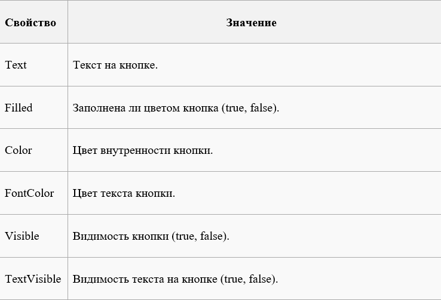
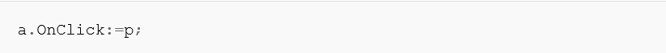
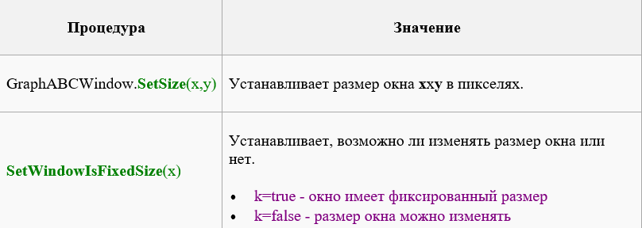

Задания для 1 курса. Практическое занятие №17
Основные графические примитивы для PascalABC
 Курсор Параметры x и y в обработчиках OnMouseDown, OnMouseUp и OnMouseMove определяют координаты курсора мыши в момент наступления события. Привязка обработчиков событий Чтобы выполнялась некоторая процедура при нажатии на кнопку пишите:  a - имя кнопки, p - процедура, которая выполниться по нажатию на кнопку a. Окно GraphABC GraphABCWindow - класс главного единственного графического окна. 
|